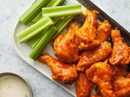

Baked Buffalo Wings

Well living in New York State, you know i have to like the hometown favorite; Buffalo Wings!
Well you dont need a fryer for these wings. Just bake them in the oven for a little over an hour
and have some wings at home!
INGREDIENTS
Wings
- 4 lbs chicken wings
- 5 tsp baking powder
- 3/4 tsp salt
Sauce
- 4 tbsp unsalted butter, melted
- 1/2 cup Frank's Red Hot
- 1 tbsp brown sugar
- 1/4 tsp salt
STEPS
- Preheat oven to 250 degree F
- Toss wings in baking powder
- Bake 30 minutes on bottom rack of oven
- Mix butter, Frank's Red Hot, brown surgar and salt together.
- Bake for 40 minutes on 425 degrees F on top rack of oven
- Remove from oven and toss in sauce
- Serve